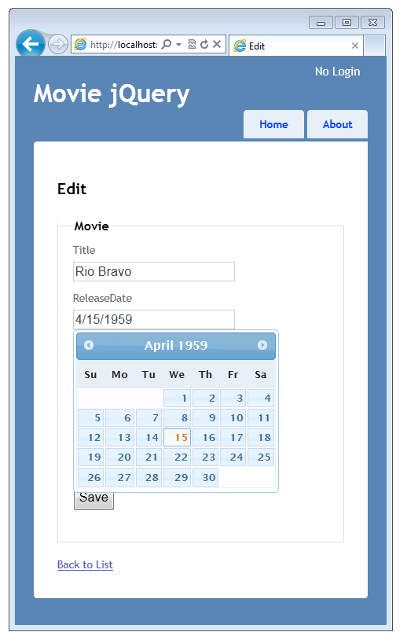

You'll start with the MVC Movie application and add display and editor templates. You will then hook up the jQuery UI Datepicker popup calendar.

We have seen that you can specify the format for a model property with the following approaches:
[DisplayFormat(DataFormatString = "{0:d}")]
public DateTime ReleaseDate { get; set; }
DateTime property, otherwise the built in ASP.NET templating system will display the property as a date.
[DataType(DataType.Date)]
public DateTime ReleaseDate { get; set; }
DateTime
properties in a model, without adding an attribute to our model and without adding any markup to our views.
In the next section, we will hook up the jQuery DatePicker to our edit views
You'll add edit and display templates to the a simple movie-listing application that was created in the Getting Started With MVC3 tutorial. You will also add a jQuery UI Datepicker popup calendar to simplfy entering dates. Below is a screenshot of the modified application with the jQuery UI Datepicker popup calendar displayed.
This tutorial will teach you the basics of working with editor templates, display templates and the jQuery datepicker in a ASP.NET MVC Web application. You can use Microsoft Visual Web Developer 2010 Express Service Pack 1, which is a free version of Microsoft Visual Studio to follow the tutorial. Before you start, make sure you've installed the prerequisites listed below. You can install all of them by clicking the following link: Web Platform Installer. Alternatively, you can individually install the prerequisites using the following links: